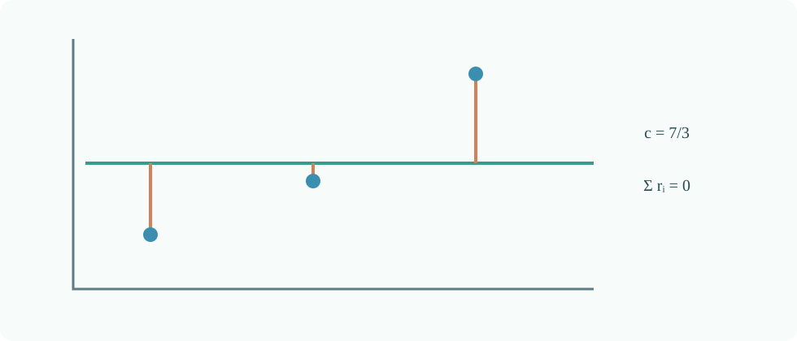

CHAPTER 03 · 3.1
最小二乘的几何原理：让数据落到模型的列空间
超定观测、正交残差、唯一投影与最佳拟合的完整推导
有 m 个观测和 n 个未知参数，m>n 时通常无法满足全部 Ax=b 方程。最小二乘选择 x̂ 使 ||Ax̂−b||₂ 最小；几何上，p=Ax̂ 是 b 在 A 的列空间里的正交投影，剩余 r=b−p 与所有模型列向量垂直。
用一个常数拟合 [1,2,4]，为什么最优值是 7/3？


正交条件由方向导数自然出现
令 f(x)=½||Ax−b||₂²。沿方向 h 的变化率为 hᵀAᵀ(Ax−b)。要让它对所有 h 为零，必须 Aᵀ(Ax̂−b)=0，所以残差 r=b−Ax̂ 垂直于 Col(A)。
如果 A 列满秩，这个驻点是唯一最小点。若 A 秩亏，投影 p 仍唯一，但解参数 x 可能不唯一；这时可以额外选择二范数最小的那个 x。
三点常数拟合的完整手算
取 A=[1,1,1]ᵀ、b=[1,2,4]ᵀ、未知常数 c。代价 (c−1)²+(c−2)²+(c−4)² 的导数为 2(3c−7)，所以 c=7/3。
最佳预测 p=[7/3,7/3,7/3]ᵀ；残差 r=b−p=[−4/3,−1/3,5/3]ᵀ。三项相加正好为零，因此 Aᵀr=0，即使 r 并非零向量。
空间分解与勾股定理
由于 p⊥r，且 b=p+r，因此 ||b||₂²=||p||₂²+||r||₂²。对任意另一组模型参数，p' 仍在 Col(A) 中，可用勾股定理证明 ||b−p'||₂²=||r||₂²+||p−p'||₂²≥||r||₂²。
把 r 称为“未由这个线性模型解释的部分”是准确的；不加统计假设就称它为独立白噪声则不准确。异常值、模型错设、测量偏置也都进入残差。
正规方程、QR、SVD 三条数值路线
正规方程 AᵀAx=Aᵀb 直接描述正交条件，但当矩阵列接近相关时，AᵀA 的条件数比 A 大得多；QR 用正交变换和三角求解避免显式形成 Gram 矩阵。
SVD 通过 σᵢ 揭示弱方向与秩亏时的最小范数解；对于超大稀疏问题，LSQR/LSMR 等迭代法可能比形成分解更节省内存。方法选择还取决于误差预算和结构。
滑动一个观测后重新拟合，而不是移动装饰线
浏览器固定前两点 b₁=1、b₂=2，滑动 b₃，每次重算 c=(3+b₃)/3，并绘制观测点、拟合线和各点竖直残差；同时显示残差平方和与 Σrᵢ。
Python/MATLAB 将手算 c 与 lstsq 结果比较，再验证 Aᵀr≈0 这一几何不变量，明确区别最小二乘最优与每个原方程均成立。
交互探索：用一个常数拟合 [1,2,4]，为什么最优值是 7/3？
令 f(x)=½||Ax−b||₂²。沿方向 h 的变化率为 hᵀAᵀ(Ax−b)。要让它对所有 h 为零，必须 Aᵀ(Ax̂−b)=0，所以残差 r=b−Ax̂ 垂直于 Col(A)。